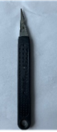

| Arbeitsschritt 1 | Ablauf | Hilfsmittel |
- Bauteil prüfen auf: Vollständig ausgespritzt. Aufblähungen, Einfallstellen, nicht erlaubt.
- Achtung: Jedes Bauteil muss gestempelt werden!
- Achtung: Bauteile dürfen nicht gestempelt werden!
- Alle Gewinde vorhanden!
- Bei Montage Handschuhe tragen.
|
|
- Augen und Hände

- Handschuhe

|
| Arbeitsschritt 2 | Ablauf | Hilfsmittel |
- Bearbeiten Außenseite:- Anguss Ansatz [Anguss_note] entfernen.
|
|
- Hände
- Seitenschneider

- Skalpellmesser

- Hammer & Stechbeitel

- Seitenschneider (pneumatisch)

|
| Arbeitsschritt 3 | Ablauf | Hilfsmittel |
- Bearbeiten Außenseite : - Überspritzung entfernen.
- Bearbeiten Außenseite : - Grat entfernen.
- Bearbeiten Außenseite : - Überspritzung entfernen & Grat verschleifen.
- Bearbeiten Außenseite : - gezeigte Stelle mit Fettlöser und Tuch reinigen
- Bearbeiten Außenseite : - Stempel an gezeigter Stelle einbringen.
- Bearbeiten Außenseite : - Bohrung d = X mm setzen.
- Bearbeiten Außenseite : - Werkteil [Articel] mit XX montieren.
|
|
- Skalpellmesser
- Entgrater

- Schleifschwamm

- Plastikreiniger & Tuch

- Stempel

- Bohrer

- Hände
|
| Arbeitsschritt 4 | Ablauf | Hilfsmittel |
- Bearbeiten Innenseite : - Werkstück in Montagevorrichtung einöegen, wie gezeigt.
|
|
- '- Montagevorrichtung /n („VO“[[Articel]-^\d{1}]“L1“)

|
| Arbeitsschritt 5 | Ablauf | Hilfsmittel |
- Bearbeiten Innenseite: \n - Gewinde-einsatz :
- Drehmoment:[Drehmoment] Nm\n
- [Gewinde_bezeichnung]\n (M5x8;[Gewinde_anzahl] Stk.)
- [Note_gewinde] einbringen.
|
|
- Zählschrauber\n[Gewinde_anzahl]Stk.)

- Lökolben\n[Gewinde_anzahl]Stk.

- Hammer & Schlagstift

|
| Arbeitsschritt 6 | Ablauf | Hilfsmittel |
- Prüfen : - Punkte / Verschmuzung nicht zulässig !
- Prüfen : - „Brenner“ – Spuren nicht erlaubt !
- Prüfen : - Kratzer / Bindenaht auf Sichtseitenicht erlaubt !
- Prüfen : - Einfallstellen nicht zulässig !
- Prüfen : - Aufblähungen nicht erlaubt !
- Prüfen : - Welle / Delle nicht zulässig !
- Prüfen : - Unebenheiten nicht erlaubt !
- Prüfen : - „Elefantenhaut“ nicht erlaubt !
- Prüfen : - Vollständig ausgespritzt.
- Prüfen : - (Umlaufende) Kante darf nicht beschädigt sein.
- Prüfen : - Bruch / Verzug nicht zulässig !
|
|
- Augen

|
| Arbeitsschritt 7 | Ablauf | Hilfsmittel |
- Verpacken : [vp_count_layer] Lagen a [vp_count_layer_pcs] Stk.
- 1 Lage a [vp_count_layer2] Stk.
- Insgesamt: Jeweils [count_total] Stk. pro Karton.
|
|
- - EU-Palette /n VPN9007 /n/n – Karton /n VPN9003 /n/n – Kartonzw.-lage /n VPN90032
|